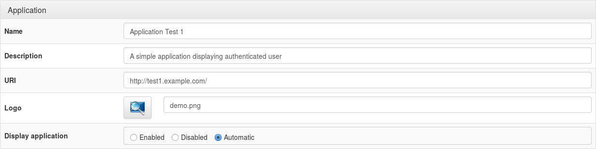
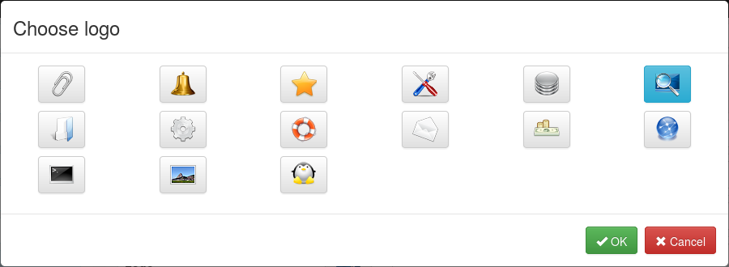

Le menu du portail LemonLDAP::NG est composé de 4 modules :
Chaque module peut être activé via une règle en utilisant les informations de session de l'utilisateur. Ces règles peuvent être modifiées via le manager : Paramètres généraux > Portail > Menu > Activation des modules.
On peut utiliser 0 ou 1 pour activer/désactiver chaque module ou utiliser une règle plus complexe. For example, to display the password change form only for user authenticated trough LDAP or DBI:
$_auth eq LDAP or $_auth eq DBI
Configurer les hôtes virtuels n'est pas suffisant pour afficher une application dans le menu. En effet, un hôte virtuel peut contenir plusieurs applications (http://vhost.example.com/appli1, http://vhost.example.com/appli2).
Dans le manager, on peut configurer les catégories et applications dans Paramètres généraux > Portail > Menu > Catégories et applications.
Paramètres des applications :


portal/static/common/apps/). You can set a custom logo by setting the logo file name directly in the field, and copy the logo file in portal applications logos directory